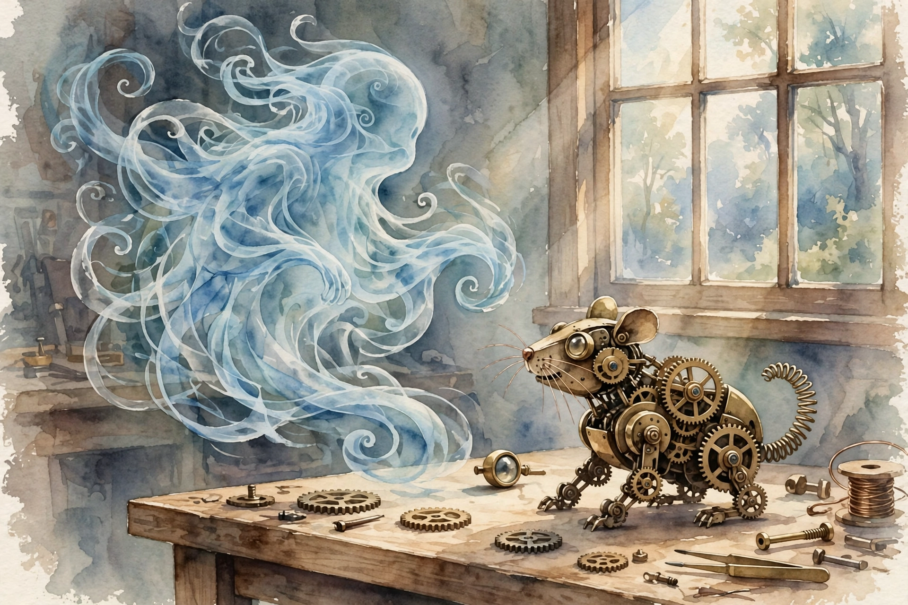

Dwarkesh Patel · Ep 4 · Companion
Andrej Karpathy
The builder's manual: why this is the decade of agents and not the year, why today's models are ghosts and not animals, and what 8,000 lines of hand-built code teach that no paper can. This companion follows the full conversation in order, from RL bottlenecks to a 1989 time machine.

Illustration. Ghosts, not animals: the ethereal entity we actually built. AI-generated watercolor made for this page.
Watch. The official episode video. Use the chapter menu above to jump to any section of this companion as you listen.
The Wisdom Index: every nugget in this companion
§1 · Opening
The Decade of Agents, Not the Year
Source fact
Dwarkesh opens with Karpathy's most quoted correction. Someone declared this the year of agents. Karpathy, triggered by the over-prediction, answered with a longer clock.
It's the decade of agents,
Andrej Karpathy · Episode transcript §1
The early agents impress him daily. Claude and Codex are genuinely useful. But the gap between a dazzling demo and an agent that actually works, end to end, in the wild, is the whole project. His question back: what exactly will take a decade? Answer: making it work. The bottlenecks are not one breakthrough away. They are a long list of unglamorous problems, each needing its turn.
Nugget 1 · Timelines
Name the decade, not the year
What happened. Karpathy stretched the industry's favorite prediction by 10x. Not because agents disappoint, but because "working" is a much higher bar than demoing.
Why it matters. Year-scale predictions price in only the visible problems. The invisible ones, reliability, edge cases, integration, take the other nine years.
The principle. When a technology demos well, multiply the timeline to production by ten. The demo is the first 10 percent.
§2 · What we built
Ghosts, Not Animals
Source fact
Karpathy's central metaphor: we train by imitating humans and the data they put on the internet, so we get ethereal spirit entities, fully digital, mimicking humans. A different kind of intelligence, starting from a different point in the space of possible minds. "We're not really building animals," he says. But we could make them more animal-like, and we should want to.
We want to build animals.
Andrej Karpathy on the goal · Episode transcript §2
He comes at it as a builder with a hard hat on. Evolution is off the table, he does not know how to do it. But imitation of internet documents works, and it lifts us to something with real built-in knowledge and intelligence. The ghost is not a failure. It is a starting point.
Nugget 2 · Metaphor
Ghosts, not animals
What happened. Imitation of text produces spirits: knowledgeable, fluent, disembodied. Animals would need bodies, drives, and a world.
Why it matters. The metaphor predicts the failure modes. Ghosts hallucinate, drift, and lack grounding, exactly what we observe.
The principle. Name what you actually built, not what you wished you built. The honest noun predicts the next ten bugs.
§3 · The ledger
Count the Bits
Source fact
Karpathy proposes a ledger: how much information does the model store per unit of information it receives? Take Llama 3, trained on 15 trillion tokens. The 70B model holds the equivalent of about 0.07 bits per token seen in pre-training. Pre-training is grotesquely lossy.
Then the contrast. In-context learning assimilates about 320 kilobytes per token, a 35 million-fold difference in information per token. The weights barely sip. The context window gulps.
Information per token: pre-training vs in-context
Hover any bar for detail. Log scale: the gap is 35 million-fold.
Source: Dwarkesh Patel interviews Andrej Karpathy, episode transcript §3. Figures are Karpathy's estimates for Llama 3.
Nugget 3 · Measurement
Count the bits
What happened. Karpathy divided what the model keeps by what it saw. The ratio exposes pre-training as a trickle and context as a flood.
Why it matters. Ratios beat vibes. One division reframed where the intelligence actually lives.
The principle. When a process feels magical, audit its ledger. Divide output by input and watch the magic shrink to size.
§4 · Brains
The Cortex and the Missing Distillation
Source fact
The cortex is famously plastic. Karpathy cites the rewiring experiments, visual cortex rewired to auditory input, where the animal learned fine, as evidence that cortical tissue is general-purpose. Reasoning traces inside neural networks, he suggests, are our version of that flexible tissue.
What we lack is the distillation phase. Humans take the day's events, analyze them obsessively, and distill them back into the weights. Models have no equivalent: no nightly consolidation, no per-person neural net, no continual learning worthy of the name. In-context learning is real intelligence, visibly meta-learned by gradient descent, but the in-context process itself is not gradient descent, just as lifetime learning is not evolution.
Nugget 4 · Learning
In-context learning is the real intelligence
What happened. Gradient descent built a machine that learns without gradient descent. The meta-learner is the product. The weights are the substrate.
Why it matters. It tells you where to invest. The context window is not a hack around the model. It is the model's mind.
The principle. Distinguish the thing that learns from the thing that learned. Optimize the learner, not just the learned.
§5 · Progress
Everything Improves Together
Source fact
What drives progress? Karpathy's answer: everything, at once. More data, better hardware, better kernels and software, better algorithms. No single factor dominates for long. The trend has held for a while, and he expects it to continue.
The proof is nanochat: his from-scratch rebuild of the ChatGPT pipeline in about 8,000 lines of code, taking in the entire stack from tokens to a working assistant. No one thing made the jump from GPT-2 to nanochat. Dozens of small improvements compounded.
Nugget 8 · Progress
Everything improves together
What happened. GPT-2 to nanochat took no single breakthrough. Data, hardware, kernels, and algorithms each contributed, none winning too much.
Why it matters. Single-cause stories mislead. Betting everything on one axis, one model, one trick, loses to the portfolio.
The principle. When many inputs improve in parallel, diversify your bets across all of them. The winner is the bundle.
§6 · nanochat
Build It to Understand It
Source fact
Karpathy's credo, which he attributes to Feynman with a caveat: if you build it, you understand it. He says he has always believed this very strongly, because papers hide the details that matter. Nanochat forced every decision into the open: tokenization, training, RL, the serving stack.
The surprise was how little was load-bearing. Asked what mattered most going from GPT-2 to nanochat, his answer: there was no one thing. The pipeline is the product, and the only way to learn the pipeline is to write all 8,000 lines yourself.
Nugget 5 · Craft
Build it to understand it
What happened. Karpathy rebuilt the whole stack by hand and found the knowledge lived in the doing, not the reading.
Why it matters. Abstractions leak upward. The person who wrote the pipeline debugs it ten times faster than the person who read about it.
The principle. Rebuild one system from scratch per year. The lines you write are the understanding you keep.
Toy: the autonomy slider
Drag from human-led to agent-led. Karpathy's frame: the decade is the slider moving right.
Stages are the builder's gloss on the episode's decade-of-agents framing, not Karpathy's literal labels.
§7 · Reinforcement learning
Suck Supervision Through a Straw
Source fact
Karpathy's phrase for the RL predicament, which Dwarkesh calls beautifully evocative: "Sucking supervision through a straw." The reward signal is thin. In one run, a hundred attempts went in and only three came out right, and RL's whole job is to say "Do more of this." to the three and move on.
The practical limit today: agents handle maybe 10 or 20 steps, not 100 or 1,000. The supervision straw is narrow, and every step of autonomy multiplies the chance of drift. Widening the straw, denser rewards, better verifiers, longer horizons, is the decade's work.
Nugget 6 · RL
Suck supervision through a straw
What happened. RL learns from a trickle: three successes in a hundred tries, amplified by repetition.
Why it matters. The bottleneck is not the algorithm. It is the thinness of the signal. Richer feedback beats cleverer updates.
The principle. When learning stalls, widen the feedback channel before you tune the learner. Signal first, algorithm second.
§8 · Time travel
The 1989 Time Machine
Source fact
For fun, Karpathy reproduced Yann LeCun's 1989 work and then time-traveled 33 years of algorithms onto it. The result surprised him: all of modern algorithmic progress, applied to the 1989 setup, only halved the error. Thirty years of ideas, one halving.
He is careful about the reading. Halving the error repeatedly is how the field compounds, and the Atari deep RL shift of 2013 was part of the early agent lineage he traces. But the experiment disciplines the story: data and compute did more of the recent work than the algorithms did.
Nugget 7 · History
Time-travel by algorithms
What happened. Thirty-three years of algorithmic genius, ported back to 1989, bought one halving of error. The rest of progress came from data and scale.
Why it matters. It separates the contributions. Algorithms matter enormously, and less than the legend claims.
The principle. Replay history with one variable changed. Counterfactuals beat narratives for apportioning credit.
§9 · Perspective
Fifteen Years In
Source fact
Karpathy entered AI almost two decades ago, and worked through fifteen years or so of the modern era. Dwarkesh asks what the people in the room felt at each breakthrough, and where they were too pessimistic or too optimistic. The pattern he keeps returning to: the field repeatedly underestimates what scale will do, then overestimates what the next year will do.
Interpretation
That is the whole episode in one loop. Underestimate the decade, overestimate the year. Karpathy's correction is not pessimism. It is a schedule: ten years of real, compounding, unglamorous work between the demo and the animal.
The episode in seven lines
- It is the decade of agents, not the year. Making it work is the project.
- We built ghosts by imitating the internet. The goal is animals.
- Pre-training stores 0.07 bits per token. In-context learning stores 320 kilobytes. The gap is 35 million-fold.
- The cortex distills the day into the weights. Models have no equivalent yet.
- Build the 8,000 lines yourself. The pipeline is the understanding.
- RL sucks supervision through a straw. Widen the signal before tuning the learner.
- Thirty-three years of algorithms halved the 1989 error. Data and compute did the rest.
Distilled from Dwarkesh Patel's interview with Andrej Karpathy (video id lXUZvyajciY). All figures are the guest's estimates from the episode transcript.